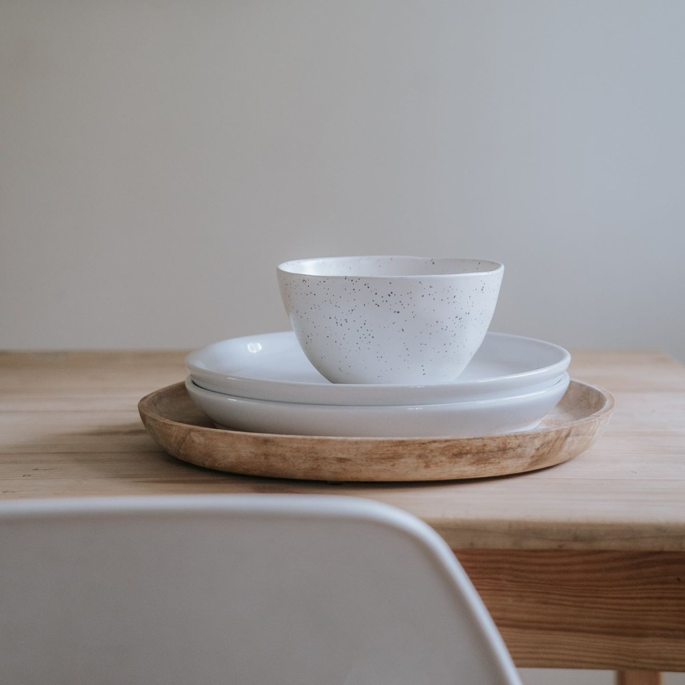
一
白磁の碗HAKUJI BOWL
手のひらにおさまる、口縁の薄い碗。白磁は使ううちに茶渋がうっすらと入り、それが景色になります。電子レンジ可。
- 作り手
- 小野 晴子（佐賀・有田）
- 寸法
- 径 11.5cm 高さ 6.5cm
- 重さ
- 約 180g
3,300円（税込）
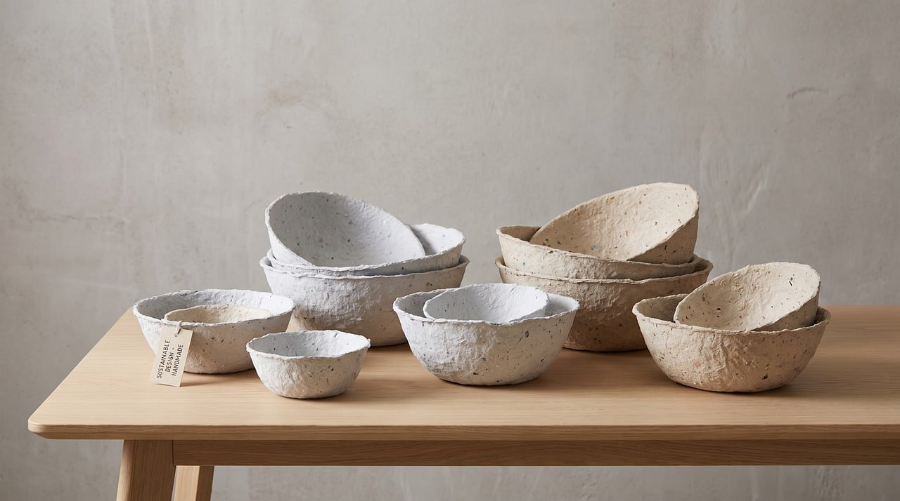
日々つかううつわを、作り手の工房からひとつずつ検品して、お届けしています。同じ釉薬でも、ひとつとして同じ表情のものはありません。
冬の企画展「湯呑と急須」 十一月二十日より
毎週金曜に、工房から届いたものを並べます。一点ものは売り切れ次第、終了です。

手のひらにおさまる、口縁の薄い碗。白磁は使ううちに茶渋がうっすらと入り、それが景色になります。電子レンジ可。
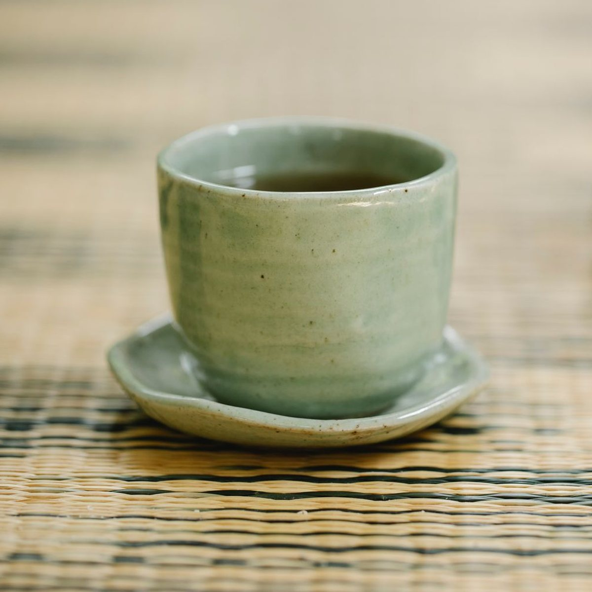
深い青磁釉を厚めにかけ、縁で釉が薄く白く抜けています。皿は小鉢としても。ふたつで一組。
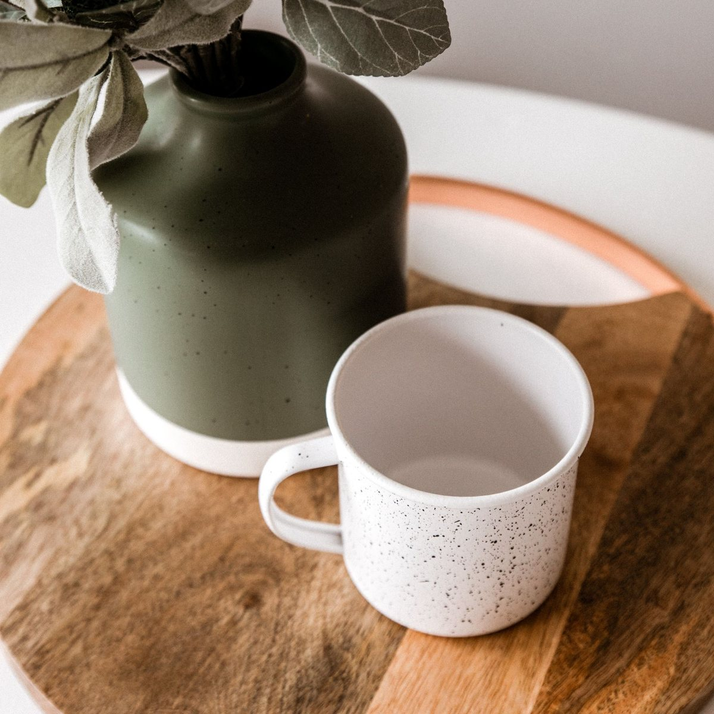
残り 2白と飴の二色。粉引は貫入に色が入りやすいので、はじめにぬるま湯に浸けてからお使いください。持ち手は指二本分。
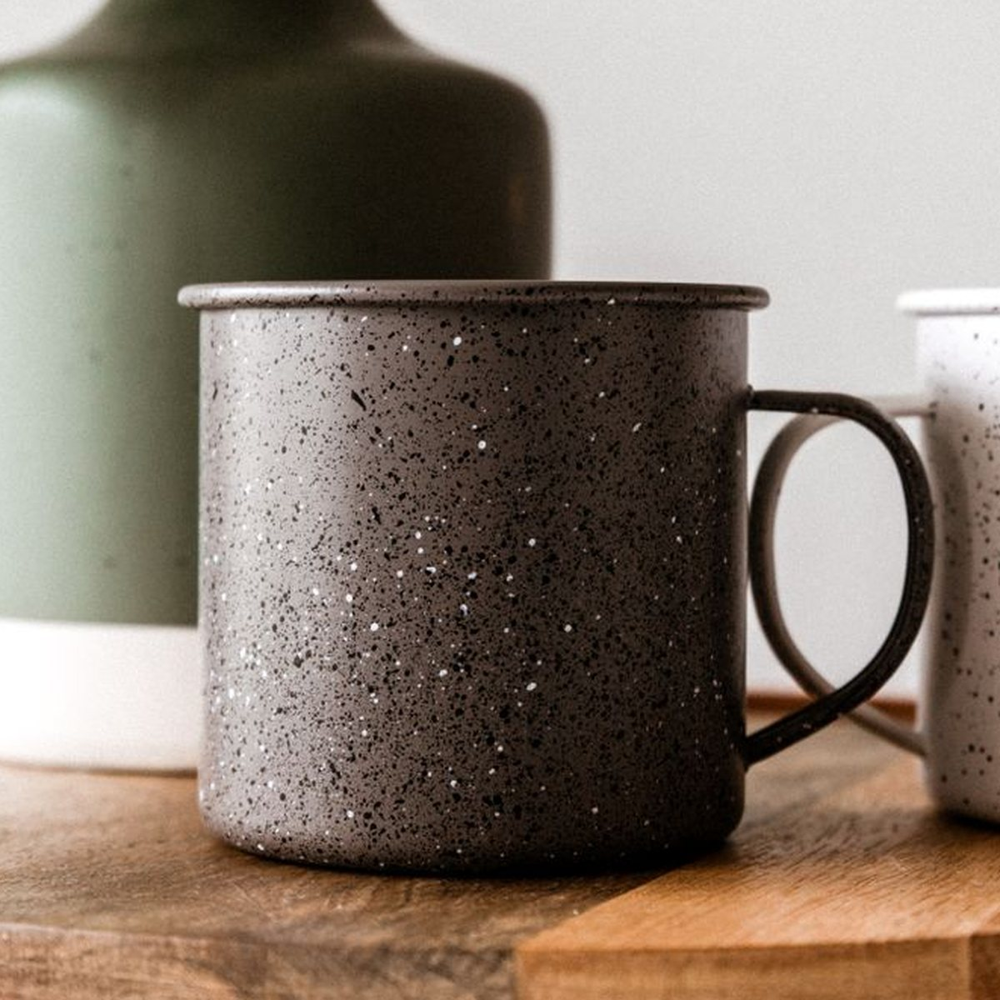
薪の灰を釉にした、青みのある灰釉。窯の中の置き場所で色が変わるので、一点ごとに写真を撮っています。
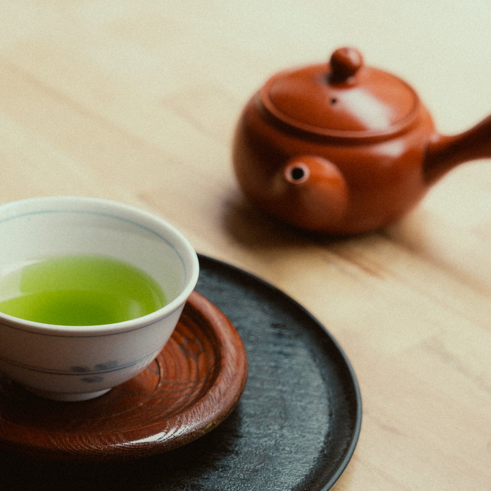
企画展「湯呑と急須」から。茶こしは陶製の一体型で、金属を使っていません。二人分の茶が入ります。
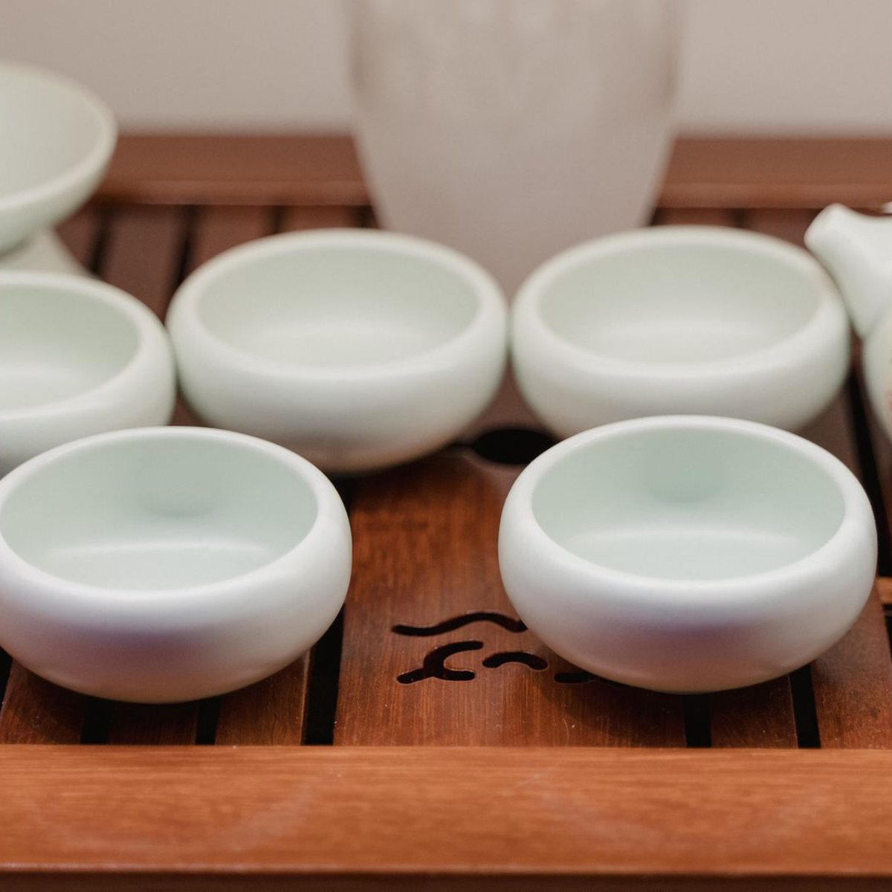
急須と合わせて作られた湯呑。口縁にわずかに青が差しています。木の匙は別売りです。
土を掘るところから自分でやる人も、釉薬だけを何年も研究している人もいます。それぞれの工房を、年に二度たずねています。
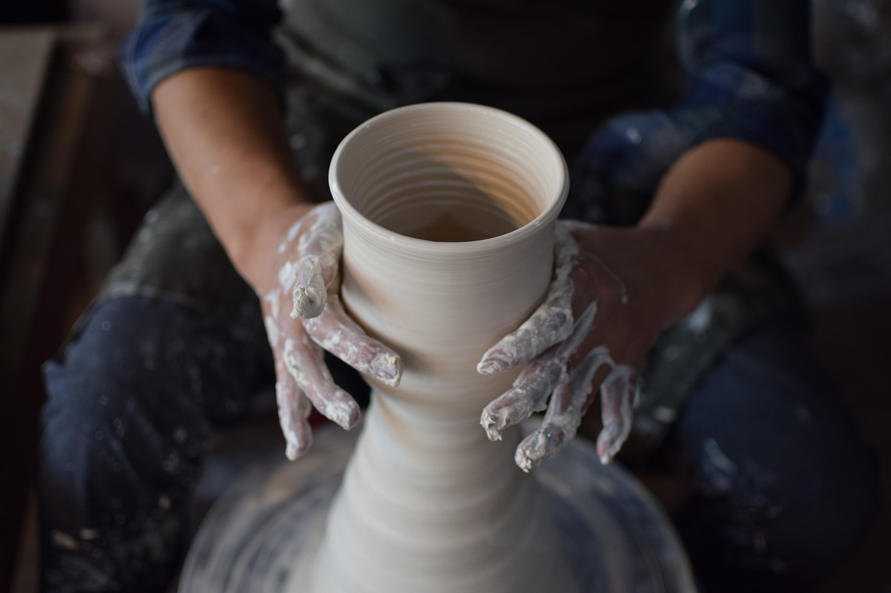
有田の磁土で、薄くて軽い日用の器を。ろくろの速さが速く、一日に百個の碗を挽きます。
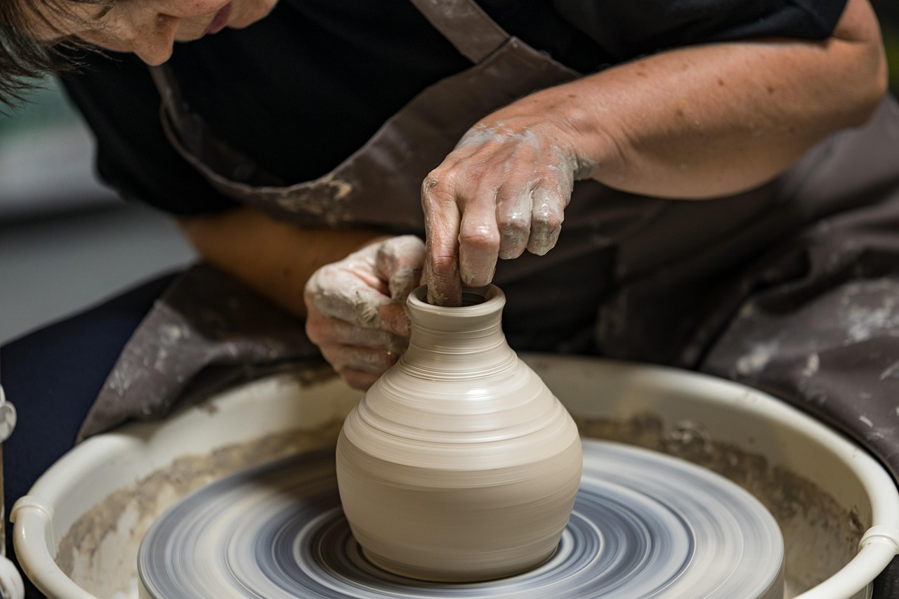
夫婦ふたりの工房。青磁と白釉を中心に、食卓で重ねられる形を考えています。
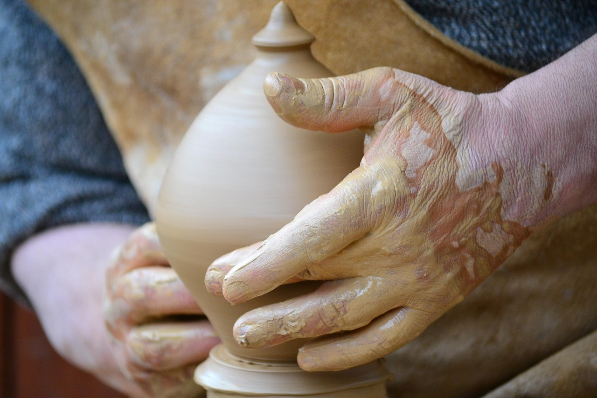
薪窯で年に四回焼きます。灰釉と朱泥。釉の流れをそのまま残す人です。
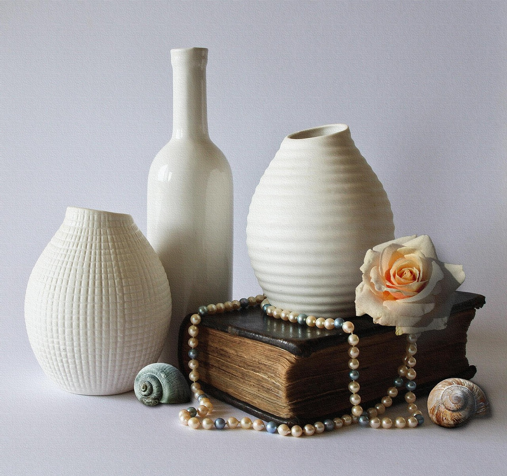
| 送料 | 全国一律 770円。11,000円以上で無料。 |
|---|---|
| 発送 | ご注文から3営業日以内。器は一点ずつ、紙で包んで送ります。 |
| 返品 | 到着から7日以内、未使用のものに限ります。割れていた場合は写真をお送りください。すぐにお取り替えします。 |
| 支払い | クレジットカード、コンビニ払い、銀行振込。 |
| 店 | 東京都目黒区青葉台 2-9-4 金・土・日 12:00〜18:00 |